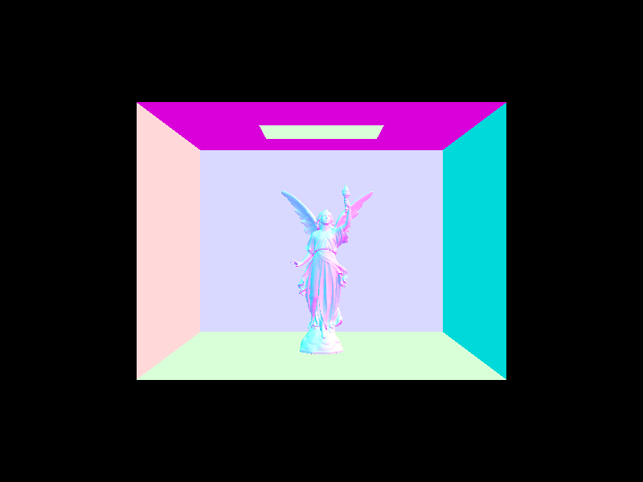
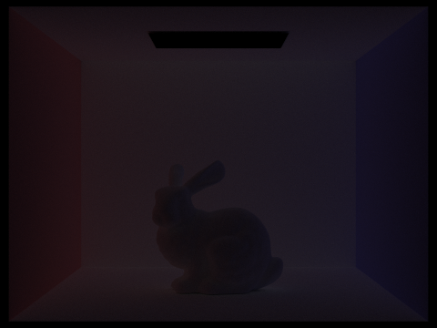

https://cal-cs184-student.github.io/hw-webpages-sp24-KevinXu02/hw3/index.html
CS184 Homework 3
Overview
In this project, we explored various aspects of ray tracing and global illumination to create realistic
rendered images.
We implemented ray generation, primitive intersection, and the Möller-Trumbore algorithm for efficient
triangle
intersection. To accelerate rendering, we constructed a Bounding Volume Hierarchy (BVH) to reduce
ray-primitive
intersection tests.
We enhanced the realism of our images by implementing direct lighting estimation using hemisphere sampling
and
importance sampling techniques. Building upon this, we extended our renderer to support indirect lighting
and global
illumination, capturing the complex interplay of light within the scene. We also employed Russian Roulette
for efficient
ray recursion termination.
Finally, adaptive sampling is implemented to dynamically adjust the sampling rate based on local variance,
allocating
more resources to high-variance regions while reducing noise in smooth areas. This significantly improved
the overall
quality of our rendered images.
Throughout this project, we gained a deep understanding of the fundamental concepts and algorithms behind
path tracing
and global illumination, developing a robust and efficient renderer capable of producing stunning images
with accurate
lighting and shadows.
Part 1
Ray Generation and Primitive Intersection
In the rendering pipeline, given a pixel in the screen space, we start by sampling by calling
gridSampler->get_sample()
and then calling camera->generate_ray() to generate a ray for each sample. We then test the
intersection of the ray with the scene's primitives using primitive->intersect(). This process
is
repeated for each pixel in the screen space, we store the intersection details in the provided
Intersection object, and use this information to shade the pixel.
Triangle Intersection Algorithm
The triangle intersection algorithm implemented in this project is based on the Möller-Trumbore algorithm, a
fast
and efficient method for determining the intersection between a ray and a triangle in 3D space. Here's the
explanation:
- The algorithm starts by computing two edge vectors of the triangle: e1 (from vertex p1 to p2) and e2
(from
vertex p1 to p3). These vectors represent the sides of the triangle.
- Next, it calculates the vector s, which is the vector from the ray's origin to the triangle's first
vertex
(p1). This vector helps determine the relative position of the ray with respect to the triangle.
- The algorithm then computes two cross products: s1 (the cross product of the ray's direction and e2) and
s2
(the cross product of s and e1). These cross products are used to calculate the barycentric coordinates
of
the intersection point.
- Using the dot products of s1, s, e1, and e2, the algorithm calculates the barycentric coordinates (b1,
b2)
and the distance along the ray (t) where the intersection occurs.
- The algorithm checks if the barycentric coordinates (b1, b2) are within the valid range [0, 1] and if
their
sum is less than or equal to 1. It also verifies if the intersection distance (t) is within the ray's
valid
range (min_t, max_t). If all these conditions are satisfied, the ray intersects the triangle.
- If an intersection is found, the algorithm updates the ray's maximum intersection distance (max_t) to
the
current intersection distance (t). This ensures that subsequent intersections along the ray will only be
considered if they are closer to the ray's origin.
- Finally, the algorithm records the intersection details in the provided
Intersection
object. It
sets the BSDF of the intersected primitive, the intersection distance, the intersected primitive
itself,
and the interpolated normal at the intersection point using the barycentric coordinates and the vertex
normals.
By following these steps, the triangle intersection algorithm efficiently determines whether a ray intersects
a
triangle and provides the necessary information for shading and further processing in the rendering
pipeline.
The use of edge vectors, cross products, and barycentric coordinates allows for fast and accurate
intersection
calculations.
Results
Part 2
BVH Construction Algorithm
The Bounding Volume Hierarchy (BVH) construction algorithm implemented in the provided code follows a
top-down
approach to recursively build the BVH tree.
- The function starts by computing the bounding box (
bbox) of the given range of primitives.
It
iterates over each primitive and expands the bbox to encompass the bounding box of each
primitive.
- A new
BVHNode is created with the computed bounding box.
- The function checks if the number of primitives in the range is less than or equal to
max_leaf_size. If so, it creates a leaf node by storing the start and
end
iterators in the node, representing the range of primitives it contains. The leaf node is then returned.
- If the number of primitives exceeds
max_leaf_size, the function proceeds to split the
primitives
and create internal nodes.
- The splitting axis is determined by finding the axis with the largest extent. The extent is calculated
by
comparing the dimensions of the bounding box along each axis (x, y, z). The axis with the largest extent
is
chosen as the splitting axis.
- The split point along the chosen axis is computed as the midpoint between the minimum and maximum
coordinates of
the bounding box along that axis.
- The primitives are partitioned into left and right subsets based on their centroid position relative to
the
split point. The
std::partition function is used to rearrange the primitives such that
primitives
with centroids less than the split point are placed before the returned iterator (mid), and
primitives with centroids greater than or equal to the split point are placed after mid.
- If the partitioning results in an empty left or right subset (i.e.,
mid is equal to
start or end), the mid iterator is adjusted to split the
primitives
evenly by moving it to the middle of the range.
- The function recursively constructs the left and right subtrees by calling
construct_bvh on
the
left and right subsets of primitives, respectively. The mid iterator is used as the
splitting point
between the left and right subtrees.
- Finally, the function returns the constructed BVH node, which contains the bounding box, left and right
child
nodes (if applicable), and the range of primitives (if it is a leaf node).
The heuristic chosen for picking the splitting point in this implementation is based on the axis with the
largest
extent. By selecting the axis with the widest spread of primitives, the algorithm aims to create a more
balanced
split, potentially reducing the overall depth of the BVH tree and improving the efficiency of ray-primitive
intersection tests.

Performance Comparison
For the cow.dae, it takes 1 minute to render the image without bvh, and 0.12s
with bvh. For the maxplanck.dae, it takes about 4 minute to render the image without bvh, and 0.56s with
bvh. And for the CBlucy.dae it takes excessive time to render the image without bvh, and 1.23s with bvh.
The BVH construction greatly reduces the time to render the image, especially for the complex models. It
reduces the time to render the image by a factor of more than 100. Which is a significant improvement.
Part 3
Direct Lighting Estimation
Hemisphere Sampling
The estimate_direct_lighting_hemisphere function is responsible for estimating the direct
lighting at a
given intersection point by sampling the hemisphere above the point uniformly. It starts by setting up a
local
coordinate system at the intersection point, with the Z-axis aligned with the surface normal. This makes it
easier
to work with directions in the local space.
Next, it determines the total number of samples to take based on the number of lights in the scene and the
desired
number of samples per area light. It then initializes the output radiance to zero and begins a loop to
iterate over
each sample.
For each sample, the function generates a random direction on the hemisphere using a hemisphere sampler. It
transforms this direction from local space to world space and creates a new ray starting from the hit point
in that
direction. The ray is then intersected with the scene using the BVH (Bounding Volume Hierarchy) to check if
it hits
any objects.
If the ray intersects an object, the function evaluates the BSDF at
the intersection point, calculates the probability density function for the solid angle, and retrieves
the
incoming radiance from the emissive property of the intersected object's BSDF. It then accumulates the
contribution
of this sample to the output radiance using the rendering equation.
After all the samples have been processed, the output radiance is averaged by dividing it by the total number
of
samples. Finally, the function returns the estimated direct lighting.
Importance Sampling
The estimate_direct_lighting_importance function takes a different approach to estimate the
direct
lighting at an intersection point. Instead of sampling the hemisphere uniformly, it uses importance sampling
to
focus the sampling effort on the light sources themselves.
Like the hemisphere sampling function, it begins by setting up a local coordinate system at the intersection
point
and initializing the output radiance to zero. However, instead of sampling the hemisphere, it iterates over
each
light in the scene.
For each light, the function determines the number of samples to take based on whether the light is a delta
light or
an area light. It then initializes a temporary radiance variable to store the contribution from the current
light.
The function then enters a loop to process each sample for the current light. It starts by sampling the light
source
to obtain the incoming direction, distance to the light, PDF, and radiance. The incoming direction is
transformed
from world space to local space, and the BSDF is evaluated at the intersection point using the outgoing and
incoming
directions.
If the PDF is greater than zero and the distance to the light is positive, the function creates a shadow ray
starting
from the hit point in the direction of the light. The shadow ray is intersected with the scene using the BVH
to
check for any occluding objects. If the shadow ray doesn't intersect any objects, the contribution of this
sample is
accumulated to the temporary radiance using the rendering equation.
After processing all the samples for the current light, the average of the temporary radiance is added to the
output
radiance. This process is repeated for each light in the scene.
Finally, the output radiance is normalized by dividing it by the number of lights, and the function returns
the
estimated direct lighting.
By using importance sampling, the estimate_direct_lighting_importance function focuses the
sampling
effort on the light sources themselves, resulting in a more efficient and accurate estimation of direct
lighting
compared to hemisphere sampling.
Bunny with 1, 4, 16, 64 light rays
As the number of light rays increases, the noise in the soft shadows decreases, leading to improved shadow
quality. This is because more light rays provide better coverage of the light source, resulting in more
accurate and smoother shadowing effects.
Results
Uniform hemisphere sampling tends to produce noisier and less defined shadows, as it
does not prioritize sampling the
light sources directly. This approach requires a larger number of samples to converge to a clean result,
especially in
scenes with small or distant light sources.On the other hand, light sampling focuses on directly sampling
the light sources, resulting in cleaner and more accurate
soft shadows with fewer samples. By prioritizing the sampling of the light sources, light sampling captures
the
illumination more efficiently, reducing noise and improving the overall quality of the image. However, light
sampling
may miss some global illumination effects that are captured by hemisphere sampling, as it only considers
direct lighting
from the light sources
Part 4
Indirect Lighting Implementation
The indirect lighting is implemented in the at_least_one_bounce_radiance function. This function
takes a
ray and an intersection as input and returns the radiance contributed by at least one bounce of indirect
lighting.
First, the function checks if the maximum ray depth has been reached. If so, it returns a black color since
no more
bounces are allowed. Otherwise, it proceeds with the indirect lighting calculation.
At the intersection point, a local coordinate system is created, with the Z-axis aligned with the surface
normal. The
hit point is calculated by adding the ray origin and the scaled ray direction.
Next, sample the BSDF at the intersection
point to
determine the incoming light direction. Russian Roulette is used to decide
whether to
terminate the ray or continue with additional bounces.
If isAccumBounces is false, meaning only one bounce is considered, the function returns the
one-bounce
radiance if the ray depth is 1. Otherwise, it creates a new ray starting from the hit point in the incoming
direction and intersects it with the scene using the BVH. If there is an
intersection,
the function recursively calls itself with the new ray and accumulates the bounce radiance scaled by the
BSDF value,
cosine term, and probability density function (PDF).
If isAccumBounces is true, allowing for multiple bounces, the function initializes the output
radiance
with the one-bounce radiance. If the ray should continue based on the Russian Roulette probability and
maximum
depth, it creates a new ray, intersects it with the scene, and recursively calls itself. The bounce radiance
is
accumulated, taking into account the BSDF value, cosine term, PDF, and Russian Roulette probability.
Finally, the function returns the accumulated radiance, which represents the indirect lighting contribution
from one
or more bounces.
Results with only direct lighting/indirect lighting
Direct lighting provides the illumination from light sources, while indirect lighting captures the
illumination
that is reflected and scattered from the surfaces in the scene. Indirect lighting captures global
illumination effects, such as color bleeding, soft shadows, and inter-reflections, which
contribute
to the overall realism of the scene. By combining direct and indirect lighting, the rendered images exhibit
more
natural and visually appealing lighting effects, enhancing the visual quality of the scenes.
Bunny with 0, 1, 2, 3, 4, 5 bounces without accumulation

For the 2nd bounce, the bunny is colored with red and blue, which is the color of the walls, and the lower
part of it is lit up by the reflection of the floor. And the shadows
are colored by the reflection of the walls. Walls and floors are also lit up by 2nd bounce.
For the 3rd, the generall effects for the scene are similar to the 2nd bounce, but it is dimmer. The bunny is
not as bright as the 2nd bounce, especially the lower part of it. The shadows are also dimmer but shaded
with wall colors.
Bunny with 0, 1, 2, 3, 4, 5 bounces
As the number of bounces increases, the images become brighter and more detailed, capturing the indirect
lighting
effects more accurately. After the 2nd bounce, the bunny is illuminated by the reflected light from the
walls and floor, and the
shadows
exhibit color bleeding and softening. The walls and floor are also lit up by the indirect lighting, creating
a more
realistic and visually appealing scene.
Bunny with 0, 1, 2, 3, 4, 100 bounces with Russian Roulette
The result is almost the same as the one without Russian Roulette, but
it is more efficient, and be capable of rendering more bounces in the same amount of time.
Rendered views with sample-per-pixel rates of 1, 2, 4, 16, 64, 1024
With the growth of the sample-per-pixel rate, the image becomes clearer and more detailed. The noise in the
image decreases. The image converges to a clean result as the sample-per-pixel rate increases. And when rate
reaches 1024, the image is almost noiseless.
Part 5
Adaptive Sampling
Adaptive sampling dynamically adjusts the number of samples per pixel based on the variance of the pixel's
color. It
allocates more samples to regions with high variance, such as edges, textures, or complex shading, while
using fewer
samples in regions with low variance, like smooth surfaces or uniform colors. This approach helps reduce
noise and
improve the overall quality of the rendered image while optimizing the rendering time.
Here's the walkthrough of the implementation of adaptive sampling:
The code starts by setting up some variables: origin for the pixel coordinates (x, y),
pixel_color for the accumulated color of the pixel (initially black), s1 and
s2 for computing the mean and variance of the pixel color (also initialized to black), and
num_samples to keep track of the number of samples taken for the current pixel (starting at 0).
It then enters a loop to sample the pixel until a termination condition is met. In each iteration, it
generates a
random sample position within the pixel using gridSampler->get_sample(), creates a ray
(r) using the camera's generate_ray function with the normalized sample position,
sets the
ray's depth to max_ray_depth, and estimates the radiance for the ray using the
est_radiance_global_illumination function, storing the result in sample_color.
The num_samples counter is incremented, and sample_color is accumulated in
s1
and the squared sample_color in s2 for computing the mean and variance.
If the number of samples taken is a multiple of samplesPerBatch, the code calculates the mean
color by
dividing s1 by num_samples, computes the variance using the formula
(s2 - (s1 * s1) / num_samples) / (num_samples - 1), and calculates the confidence interval
I using 1.96 * sqrt(variance.illum() / num_samples).
The termination condition is then checked: if the confidence interval I is less than or equal to
the
product of maxTolerance and the mean color's luminance (mean.illum()), or if the
number of
samples taken (num_samples) is greater than or equal to the maximum number of samples per pixel
(ns_aa), the loop is terminated, and the pixel_color is set to the mean color.
Otherwise,
the pixel_color is updated with the current mean color, and the loop continues.
After the loop ends, the sampleBuffer is updated with the final pixel_color at the
corresponding pixel coordinates (x, y), and the number of samples taken for the pixel is stored in the
sampleCountBuffer at the corresponding index.
By adaptively allocating more samples to regions with high variance and fewer samples to regions with low
variance,
adaptive sampling reduces noise and enhances the
overall
quality of the rendered image while keeping the rendering time under control. It's a smart way to focus the
computational power on areas that need more samples to achieve an acceptable level of noise.
Notice that in the corner of the sphere, there are completely black pixels, which might because with a
relative small batch size these pixels are not sampled enough with a low variance, and the algorithm
terminates the sampling process.
This can be fixed by increasing the batch size, which allows the algorithm to sample more in the low
variance.